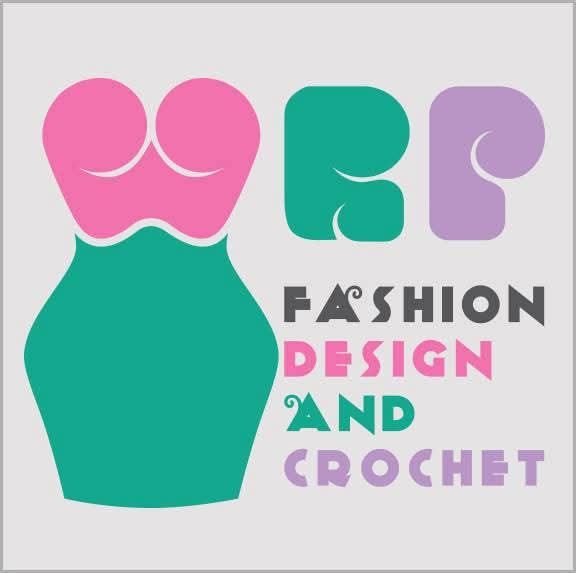
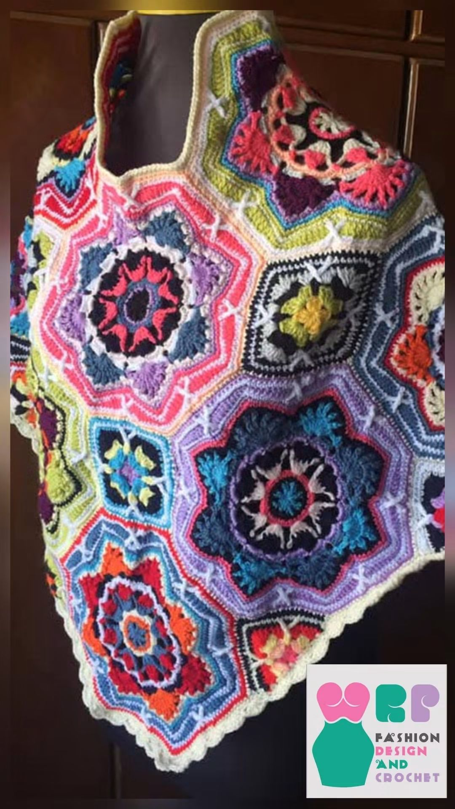
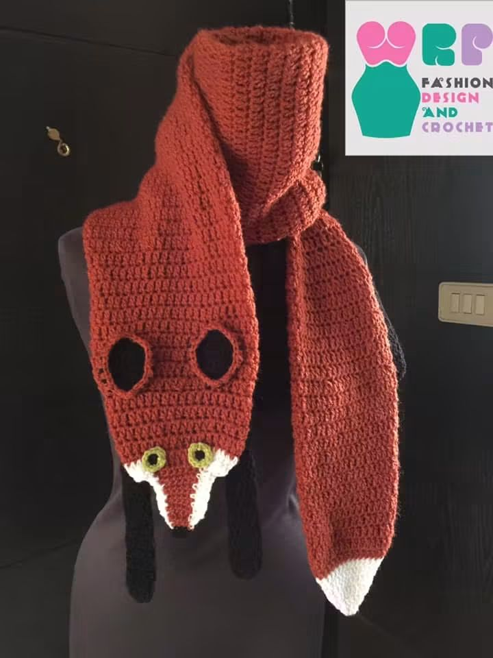
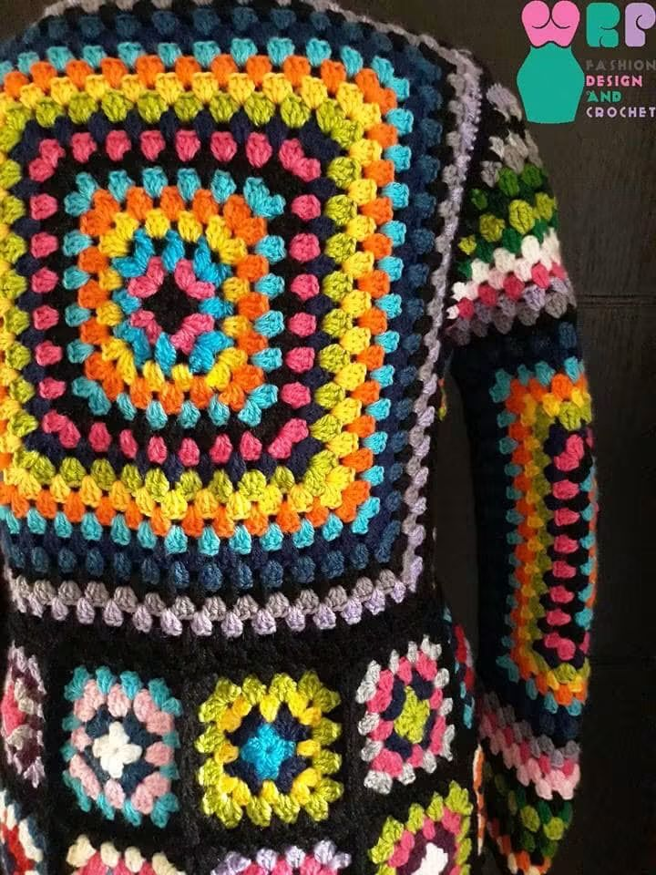
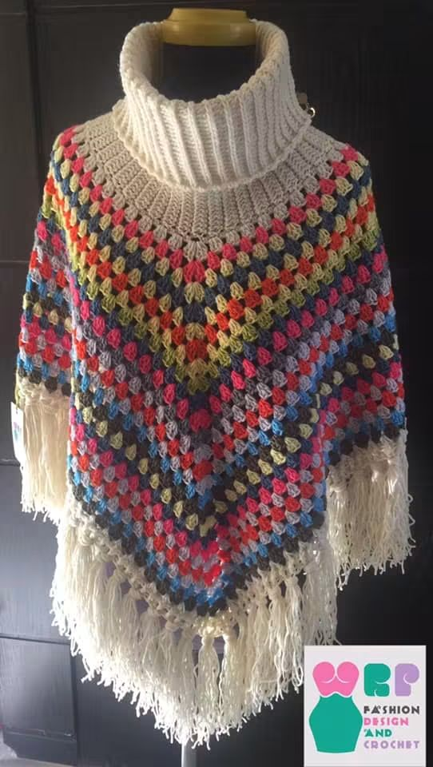
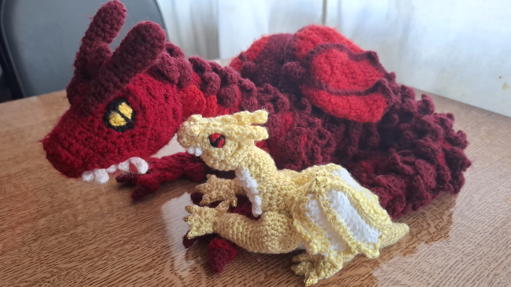

Fashion W.R.P.
Fashion has always been another form of storytelling for Wajad R. Basha.
Before becoming a writer, she was drawn to fashion design; she loved creating characters through the clothes they wore, the colours they chose, and the details that made them unique. Over time, she discovered that the same imagination that creates a garment can also create a world.
Today, writing and fashion continue to seep into each other. When she writes, she often thinks visually; when she designs, she thinks about the story behind the person who might wear it. A character’s clothing can reveal something about who they are, just as a setting, a gesture, or a carefully chosen word can.
Fashion W.R.P. is where these two sides of her creativity meet.
Here, she shares her fashion designs, creative work, and the ideas that connect fashion with storytelling.




Besides clothes, amigurumi dolls occupy another corner of her world, where she creates dragons from other worlds.
